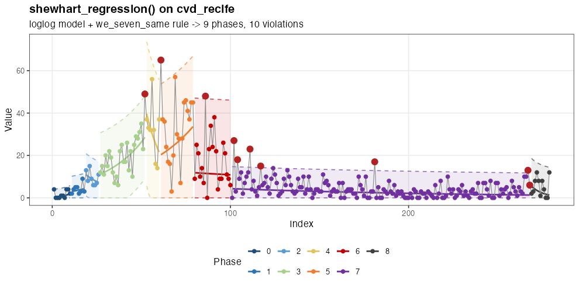
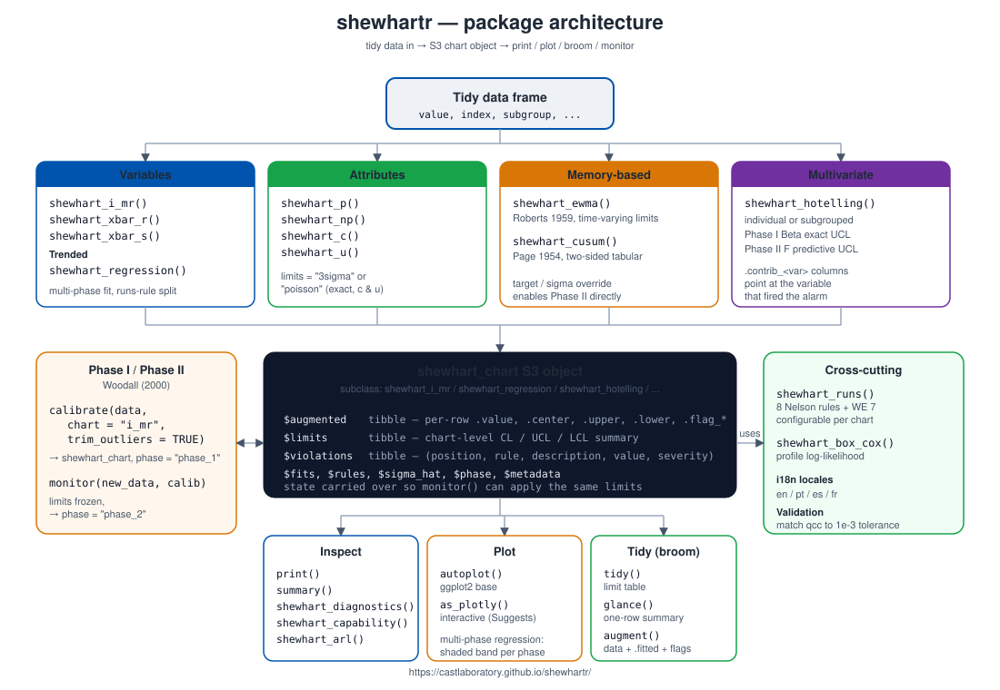

shewhartr is a tidyverse-native toolkit for Statistical Process Control (SPC). It implements the classical Shewhart chart family — variables (I-MR, Xbar-R, Xbar-S) and attributes (p, np, c, u) — alongside a flagship regression-based control chart for processes with trend, where stationarity is too strong an assumption to make.
The package is built around a small set of design choices:
-
Tidy by default. Every constructor takes
datafirst, supports tidy-eval column references, and returns an S3 object that integrates with broom viatidy(),glance()andaugment(). - Diagnostics in the box. Average Run Length (ARL) by Monte Carlo simulation, all eight Nelson runs rules, Box-Cox guidance, and a Tukey-style residual panel are first-class citizens.
-
Phase I / Phase II. Explicit
calibrate()andmonitor()functions make the distinction between estimation and prospective monitoring impossible to confuse, following Woodall (2000). -
Multilingual plots. Pass
locale = "pt"(or"es","fr") and chart titles, axis labels, and legends are translated. -
Statistically honest counts. c and u charts accept
limits = "poisson"for exact Poisson quantile limits, instead of the normal approximation that breaks down at small means.
When to use which chart
| Data type | Chart |
|---|---|
| Individual measurements (no rational subgroup) | shewhart_i_mr() |
| Subgroups of size 2-10 | shewhart_xbar_r() |
| Subgroups of size > 10 or unequal n | shewhart_xbar_s() |
| Proportion of nonconforming | shewhart_p() |
| Number of nonconforming, constant n | shewhart_np() |
| Defect counts, constant inspection size | shewhart_c() |
| Defect counts, variable inspection size | shewhart_u() |
| Process with trend (drift, growth, decay) | shewhart_regression() |
| Small persistent shifts (memory-based) |
shewhart_ewma(), shewhart_cusum()
|
| Several correlated variables monitored jointly | shewhart_hotelling() |
Multi-phase regression chart
The flagship chart for trended processes splits the series into phases when a runs rule fires, fits a local model in each, and flags points that depart from the local trend. The example below uses the COVID-19 mortality series for Recife (cvd_recife) with the original analysis settings from Ferraz et al. (2020):
fit <- shewhart_regression(
cvd_recife,
value = new_deaths,
index = .t,
model = "loglog",
phase_rule = "we_seven_same",
rules = c("nelson_1_beyond_3s", "we_seven_same"),
lower_bound = 0
)
length(fit$fits) # number of phases detected
nrow(fit$violations) # individual flagged observations
autoplot(fit)
Each shaded band is one phase, the solid line is the local regression centre, the dashed lines are the phase’s 3-sigma limits, and the firebrick points are the days flagged by the rule set as departing from the local trend.
Phase I vs Phase II
A Shewhart chart serves two different purposes that are easy to conflate. Phase I is retrospective: take historical data, identify out-of-control points, eliminate assignable causes, and arrive at trustworthy estimates of the process mean and variability. Phase II is prospective: take those estimated limits and apply them to new data, signalling alarms when something departs from the established baseline. The package draws this line in code:
Architecture

Every chart constructor — variables (shewhart_i_mr, shewhart_xbar_r, shewhart_xbar_s), attributes (shewhart_p, shewhart_np, shewhart_c, shewhart_u), regression (shewhart_regression), memory-based (shewhart_ewma, shewhart_cusum), and multivariate (shewhart_hotelling) — returns a shewhart_chart S3 object with a uniform layout. The same object then feeds into:
-
Inspect:
print(),summary(),shewhart_diagnostics(),shewhart_capability(),shewhart_arl(). -
Plot:
autoplot()(ggplot2) andas_plotly()(interactive,plotlyinSuggests). -
Tidy:
broom::tidy(),glance(),augment(). -
Phase II:
calibrate()produces a Phase I chart whose limits are frozen bymonitor()for prospective monitoring.
Documentation
The website hosts:
- A full reference for every exported function.
- Topical articles: variables charts, attributes charts, regression charts, Phase I/II, ARL by simulation, residual diagnostics, Box-Cox guidance.
- A case study on epidemiological monitoring with the regression chart.
Citation
If you use shewhartr in academic work, please cite:
Leite, A., Vasconcelos, H., Ospina, R., & Ferraz, C. (2025). shewhartr: Statistical Process Control with Tidyverse-Native Workflows. R package version 1.0.0. https://castlaboratory.github.io/shewhartr/
References
- Shewhart, W. A. (1931). Economic Control of Quality of Manufactured Product. D. Van Nostrand.
- Montgomery, D. C. (2019). Introduction to Statistical Quality Control (8th ed.). Wiley.
- Nelson, L. S. (1984). The Shewhart Control Chart — Tests for Special Causes. Journal of Quality Technology, 16(4), 237-239.
- Woodall, W. H. (2000). Controversies and Contradictions in Statistical Process Control. Journal of Quality Technology, 32(4), 341-350.
- Box, G. E. P., & Cox, D. R. (1964). An Analysis of Transformations. Journal of the Royal Statistical Society B, 26(2), 211-252.
- Tukey, J. W. (1977). Exploratory Data Analysis. Addison-Wesley.
- Wheeler, D. J., & Chambers, D. S. (1992). Understanding Statistical Process Control (2nd ed.). SPC Press.